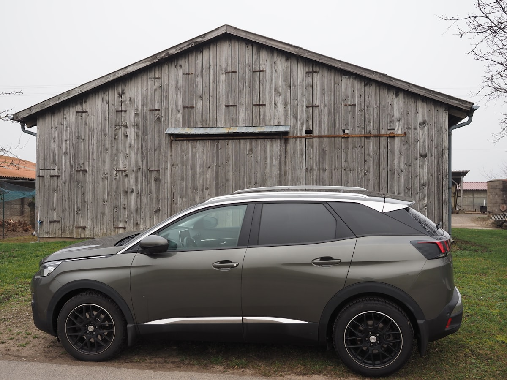

Ключі Peugeot та Citroën в Ужгороді — дублікат, програмування

Peugeot і Citroën — це концерн PSA (зараз Stellantis), тому всі ключі, чіпи та процедури ідентичні. Виготовляємо ключі Peugeot та Citroën для всіх моделей — від класичних Peugeot 206/Citroën C3 до сучасних 3008, 508, C5 Aircross. Леза VA2, HU83, чіпи PCF7936/7941, HITAG-2 та HITAG-AES.
Потрібен ключ Peugeot / Citroën?
Зателефонуйте — скажемо точну ціну та чи є потрібна заготовка
З якими моделями Peugeot / Citroën ми працюємо
- Peugeot 208 / 308 / 508 / 3008 / 5008
- Peugeot 206 / 207 / 307 / 407
- Peugeot Partner / Expert / Boxer
- Peugeot 2008 / 4008
- Citroën C3 / C4 / C5 / C6
- Citroën Berlingo / Jumpy / Jumper
- Citroën C-Elysée / DS3 / DS4 / DS5
- Citroën C5 Aircross
Ціни на ключі Peugeot / Citroën в Ужгороді
| Послуга | Ціна | Час |
|---|---|---|
| Дублікат механічного ключа VA2 / HU83 | від 1700 грн | 30 хв |
| Викидний ключ з чіпом PCF7936 / PCF7941 | від 2200 грн | 45 хв |
| Smart-ключ PSA (Peugeot 3008 II, Citroën C5 Aircross) | від 4000 грн | 1–2 год |
| Smart-ключ HITAG-AES (Peugeot 508 II, 3008 II) | від 4800 грн | 2 год |
| Програмування при повній втраті | від 3500 грн | 1–3 год |
| Заміна корпусу викидного ключа | від 600 грн | 20 хв |
* Точна вартість залежить від моделі, року випуску та комплектації. Уточнюйте по телефону.
Чому Seven Keys для Peugeot / Citroën?
- Усі моделі Peugeot та Citroën від 1998 року до 2025
- Чіпи PCF7936, PCF7941, HITAG-2, HITAG-AES — у наявності
- Леза VA2, HU83 — основні профілі для PSA
- Прив'язка через OBD або через PSA-діагностику
- Корпуси Peugeot 308, 3008, Citroën C4, C5 — на складі
- Працюємо з фургонами Partner, Berlingo, Jumper, Boxer
Як замовити ключ Peugeot / Citroën
- Зателефонуйте і назвіть модель, рік випуску та VIN (бажано)
- Ми перевіримо наявність заготовки і назвемо точну ціну
- Приїжджайте до майстерні (вул. Фединця 39, Ужгород) або викликайте майстра з обладнанням
- Виготовляємо і програмуємо ключ при вас — у середньому за 1–2 години
- Перевіряємо роботу: запуск, центральний замок, кнопки
Часті запитання про ключі Peugeot / Citroën
Скільки коштує ключ для Peugeot 3008?
Для 3008 I (2009-2016) — від 2200 грн. Для 3008 II (2017+) — від 4000 грн (smart-key).
Чи робите ключ для Citroën Berlingo?
Так. Berlingo II — від 2200 грн (викидний з чіпом). Berlingo III — від 4000 грн (smart-key).
Чи дорожчі ключі Citroën за Peugeot?
Ні. Це той самий концерн PSA / Stellantis, ціна ідентична.
Чи можете виготовити ключ для Peugeot без оригіналу?
Так. Програмування при повній втраті — від 3500 грн залежно від моделі.
Чи робите ключі для DS-серії (DS3, DS4, DS5)?
Так. DS — це преміум-лінійка Citroën, чіп тойже. Виготовлення — від 2500 грн.
Не знайшли свою модель?
Працюємо з усіма Peugeot / Citroën — зателефонуйте, підкажемо рішення